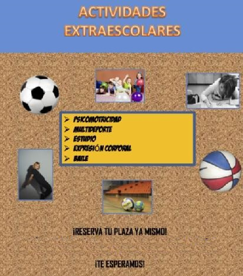
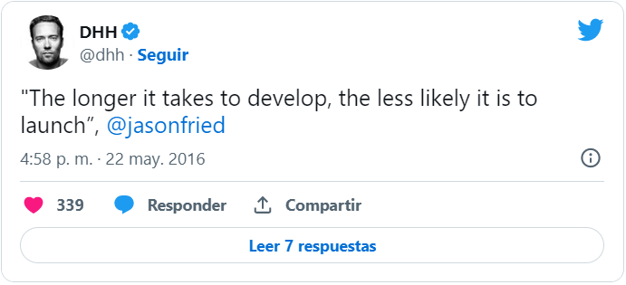
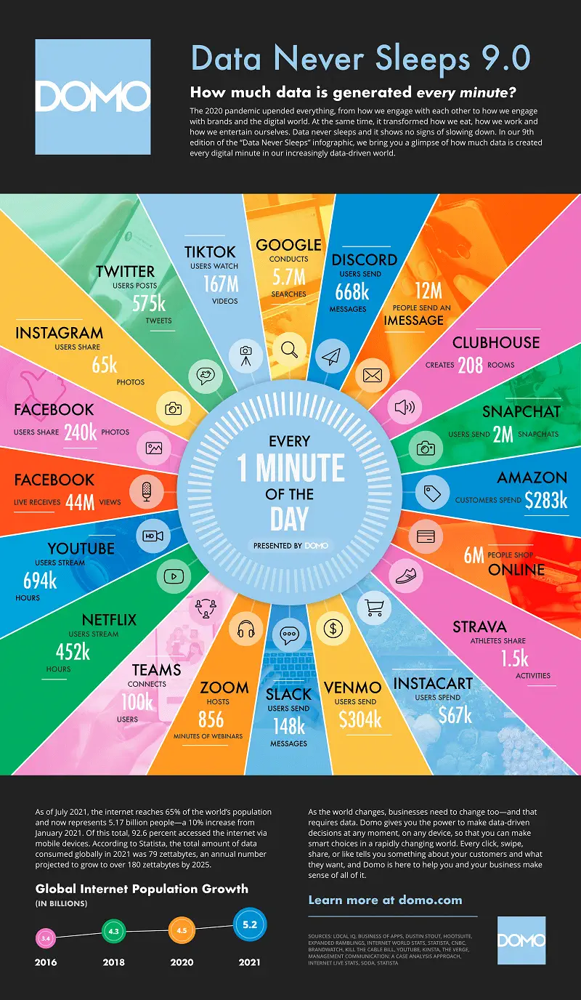
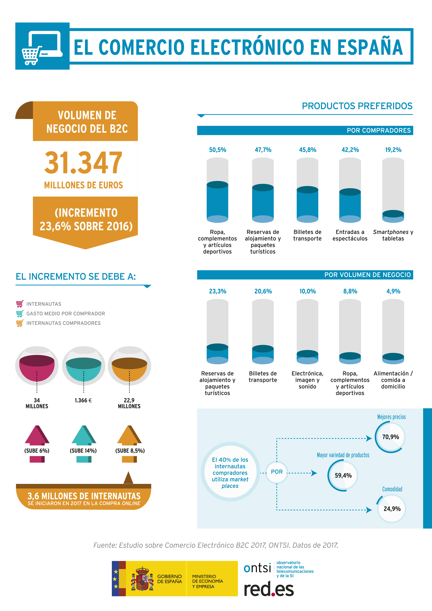

Cuando tienes conocimientos del funcionamiento de la programación y navegas por Internet, quizás te asalte la curiosidad de como funcionan las cosas en la web. Es la capacidad que desarrolla en la nueva generación web el pensamiento computacional: el ser analítico, la capacidad de ver un problema y realizar pasos sistemáticos en busca de una solución; y, en caso de que no haya una solución (porque esta no existe o los recursos son insuficientes), encontrar una alternativa. En el recorrido por la programación que estamos realizando en este curso, nos falta por ver un importante aspecto que aquí se presenta: la programación web. Por eso, si te gusta analizar temas y entender como funcionan, si te gusta resolver temas, si te gusta aprender cosas nuevas encontrarás muy apetecible este nuevo recurso en el que trabajarás el diseño de páginas web y el desarrollo de la funcionalidad del sitio para satisfacer las necesidades de los usuarios.
Cuando tienes conocimientos del funcionamiento de la programación y navegas por Internet, quizás te asalte la curiosidad de como funcionan las cosas en la web. Es la capacidad que desarrolla en la nueva generación web el pensamiento computacional: el ser analítico, la capacidad de ver un problema y realizar pasos sistemáticos en busca de una solución; y, en caso de que no haya una solución (porque esta no existe o los recursos son insuficientes), encontrar una alternativa. En el recorrido por la programación que estamos realizando en este curso, nos falta por ver un importante aspecto que aquí se presenta: la programación web. Por eso, si te gusta analizar temas y entender como funcionan, si te gusta resolver temas, si te gusta aprender cosas nuevas encontrarás muy apetecible este nuevo recurso en el que trabajarás el diseño de páginas web y el desarrollo de la funcionalidad del sitio para satisfacer las necesidades de los usuarios.
1. Una nueva generación: generación web
1. Un proyecto abierto a las miradas
Una de las formas, en las que puedes mejorar programando, es tener proyectos personales. Un proyecto personal no solo es una oportunidad de práctica, además es una oportunidad de conocer nuevas tecnologías y plataformas. ¡Aquí tienes un nuevo proyecto personal que seguro te ayudará aasentar todos los nuevos conocimientos que te proporciona este recurso!:
¡Atención al reto! La dirección del centro nos ha pedido un prototipo de página web para que los alumnos del centro puedan guardar información de sus actividades extraescolares: dedicada en principio a fotos y descripción de las actividades. La programación consistirá entonces en crear una web, que accederá a una base de datos que cumpla con esos requisitos.
Para ello conocerás y utilizarás los lenguajes HTML/CSS, herramientas de diseño web y algún hosting gratuito que alojará la página para mostrar al mundo tu creación: La Web de Extraescolares.
¡Todos el mundo podrá conocer tus actividades gracias a la ventana que abre tu trabajo!
2. La novedad convertida en cotidiana
La programación web ha tenido un impacto muy grande en el mundo. Pero curiosamente, las utilidades que más han impactado novedosamente en nuestro día a día hasta convertirse en habituales, no han nacido como grandes proyectos. En contra de lo que pueda parecer, tener ideas grandes, no es el mejor plan: Ideas pequeñas, no grandes o resumido en un tweet del fundador de Basecamp:

Esto es: en el mundo web no se pasa de cero a todo, un producto grande se crea a partir de cosas pequeñas. Echemos un vistazo a estas ideas que han generado grandes cambios posteriores y a las consecuencias en cuanto a perfiles de trabajo:
Redes sociales
Una idea tan escueta como poner en contacto a las personas ha generado diferentes modalidades de ponerla en práctica en distintos portales web, dando lugar a las ya tan famosas como imprescindibles redes sociales. Fíjate en los mensajes, imágenes, vídeos que supone un minuto al día en Internet en 2021:

Comercio electrónico
Una idea tan sencilla como un carrito de la compra on-line ha generado un volumen de negocio tal que algunas empresas ya tienen en sus páginas web la principal fuente de ingresos. ¡Observa los datos!

Desarrollo de videojuegos
Otro aspecto fundamental en el uso de la web son los videojuegos: actualmente, de manera totalmente on-line en una página web y con código relativamente sencillo se puede programar un videojuego que resulte de exito. Fíjate en el siguiente ejemplo que se ha convertido en viral:
Recuerda que si lo necesitas puedes activar los subtítulos.
Desarrolladores web vs diseñadores web
La creación de páginas web ha generado nuevas profesiones y ha especializado otras que antes no se diferenciaban. Observa las diferencias entre lo que es un programador web y un diseñador web:
Recuerda que si lo necesitas puedes activar los subtítulos.
Motus dice Anímate con la programación web
Todos lo que queréis programar y por algún motivo pensáis que no lo lográis o no os sentís capaces, recordad que quizás sólo necesitáis algunos cambios en la estrategia de formación: sí lo podéis hacer. La programación tiene un impacto tan grande en el mundo que también debe tener la obligación de formar a personas y trabajadores diversos, con motivaciones distintas o expectativas de éxito diferentes.
Cambia tu perspectiva, por un momento cambia tu forma de ver la programación, que el objetivo no sea ser buen programador, si no otro, quizás crear animaciones, juegos, un producto, ayudar a las personas, etc.
3. Nuevas metas acompañan una nueva generación
A lo largo del trabajo en este recurso conocerás la programación web y verás que eres capaz de:
- Describir las diferentes estructuras de las páginas web que consultes.
- Utilizar el lenguaje de marcado HMTL para conseguir el diseño web propuesto.
- Crear plantillas utilizando las hojas de estilo CSS.
- Presentar la información de manera atractiva y organizada en una web, utilizando los comandos y técnicas de diseño.
- Aplicar técnicas adaptativas al presentar la información, que tengan en cuenta la variedad de dispositivos actuales.
- Interconectar una web con el almacenamiento y extracción de información en una base de datos.
- Implementar recogida de datos en Internet.
- Diseñar tu propia aplicación que presente la información, la almacene y la visualice adecuadamente.
Obra publicada con Licencia Creative Commons Reconocimiento Compartir igual 4.0